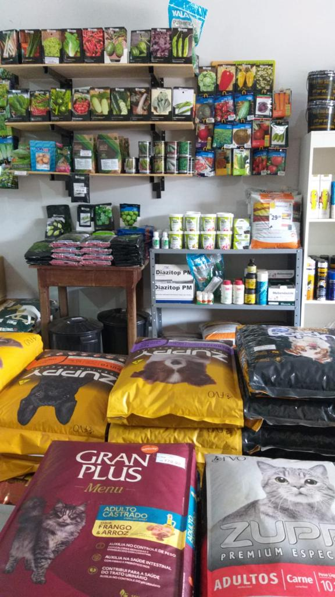
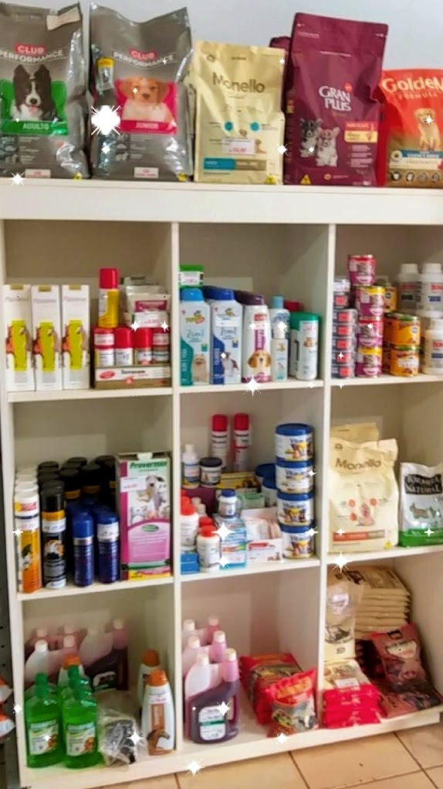
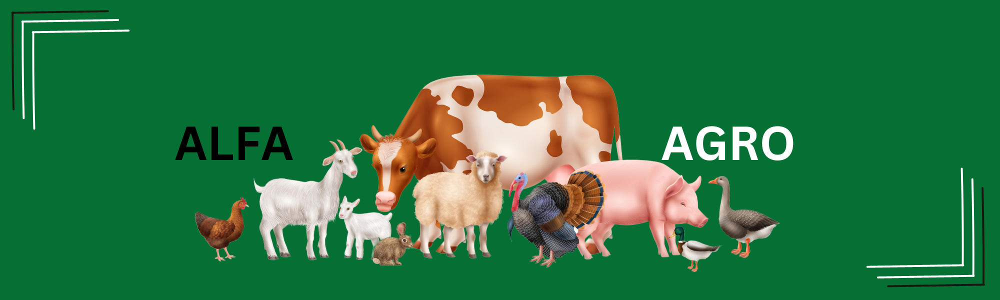

A Alfa Agro tem dos melhores produtos com o maior custo beneficio do mercado para oferecer a qualidade para nossos clientes. 🐷🐾🐶🐱
Temos os melhores produtos do mercado, com tradição e companherismo sempre visando a melhor experiência aos nossos clientes.
Comércio de rações para pets (Cães, Gatos, Equinos, Aves,
Suinos, Bovinos). E Insumos de Hortifrut!


Benefícos de alimentar seu pet do jeito certo.
A ração é importante para os animais por diversas razões. Ela é formulada para suprir suas necessidades nutricionais, garantindo seu crescimento saudável. Além disso, a ração é de fácil digestão, permitindo uma melhor absorção de nutrientes. Sua praticidade e longa durabilidade facilitam o fornecimento diário. A ração também auxilia no controle do peso e contribui para a saúde bucal dos animais. Em resumo, a ração é essencial para uma alimentação equilibrada e para o bem-estar dos animais.
A ração desempenha um papel crucial na alimentação animal e é de suma importância para garantir a saúde e o bem-estar dos animais. Aqui estão 4 linhas sobre a importância da ração na alimentação animal:
- A ração fornece os nutrientes essenciais necessários para o crescimento, desenvolvimento e manutenção da saúde dos animais.
- É formulada de maneira balanceada para suprir as necessidades específicas de cada espécie e estágio de vida, garantindo um bom desenvolvimento.
- A qualidade da ração influencia diretamente a saúde e a produtividade dos animais, proporcionando um crescimento saudável e uma boa produção de carne, leite, ovos, entre outros produtos.
- A ração também pode ser enriquecida com aditivos, como probióticos e prebióticos, que contribuem para a saúde intestinal e fortalecem o sistema imunológico dos animais.

Sua melhor escolha melhor escolha